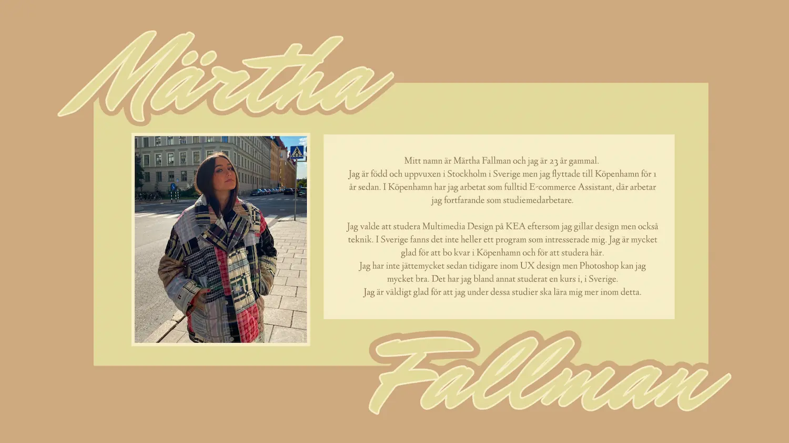
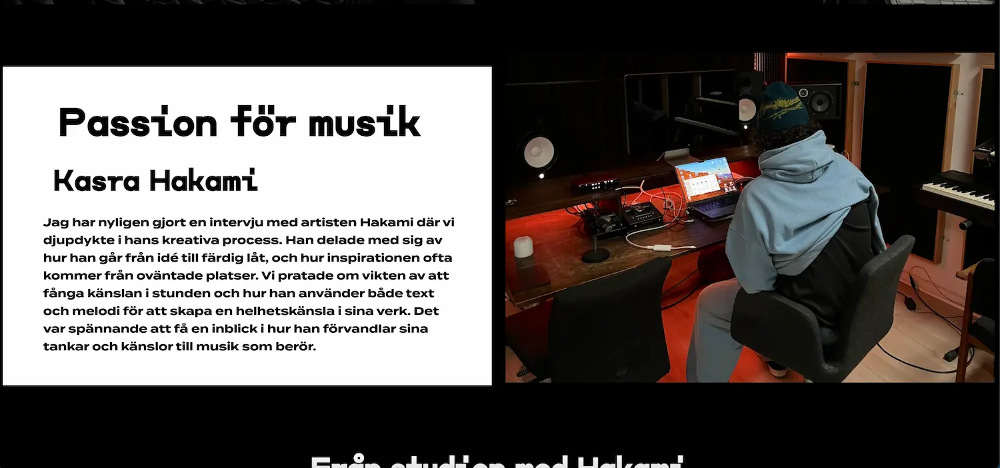

presentationskort & film
Under tema 1 fick jag en grundläggande förståelse för Figma genom arbetet med presentationskortet. Genom att använda verktyget lärde jag mig att skapa och designa visuellt tilltalande material och fick en inblick i hur digitala verktyg kan användas för att presentera idéer effektivt.
Arbetet med vårt filmprojekt gav mig ytterligare lärdomar, särskilt kring projektplanering och idéutveckling. Jag insåg vikten av att sätta upp en tydlig tidsram för att ta fram idéer, vilket hjälpte oss att hålla processen strukturerad och effektiv. Att avsätta en specifik tid för brainstorming och kreativt tänkande visade sig vara avgörande för att skapa en fungerande plan.
Genom projektet fick jag också träna på grupparbete. Att samarbeta med andra, fördela uppgifter och kommunicera tydligt blev centralt för att uppnå ett gemensamt resultat. Detta filmprojekt gav mig en chans att utveckla mina färdigheter i både kreativt skapande och samarbete, och stärkte min förståelse för hur även mindre projekt kräver planering och samordning för att lyckas.


Studiestartsprov
Under tema 2, i samband med studiestartsprovet, fick jag lära mig grunderna i HTML och CSS, vilket gav mig en tydlig förståelse för hur man bygger och designar webbsidor. Jag lärde mig att använda HTML för att strukturera innehåll genom olika element som rubriker, stycken, bilder och länkar. Med CSS fick jag möjlighet att styla dessa element, exempelvis genom att ändra färger, typsnitt, marginaler och placeringar för att skapa en mer visuellt tilltalande design.
En särskilt värdefull del av min inlärning var att arbeta med CSS Grid. Med Grid kunde jag dela upp webbsidor i rader och kolumner, vilket gav mig verktygen att skapa välorganiserade och responsiva layouter. Jag lärde mig hur man placerar element precist och hur man kan skapa en design som anpassar sig till olika skärmstorlekar, vilket är avgörande i modern webbutveckling.
Jag fick också erfarenhet av att kombinera HTML och CSS för att skapa en helhet, från att bygga en tydlig grundstruktur till att applicera designprinciper som förbättrar användarupplevelsen. Den här processen gav mig både praktiska färdigheter och en djupare förståelse för hur kodning fungerar i praktiken. Tema 2 gav mig en solid grund inom webbutveckling och inspirerade mig att fortsätta utforska ämnet vidare.
Klicka här för att besöka siten.

Grundläggande UX/UI
Under tema 3 designade och utvecklade jag en hemsida som fungerade som en Stockholmsguide för unga kvinnor. Målet var att skapa en inspirerande och användarvänlig plattform som hjälper målgruppen att upptäcka staden genom tips på aktiviteter, matställen och shopping.
I designfasen använde jag Figma och följde etablerade UI-konventioner för att skapa en modern och funktionell layout. Jag byggde även en klickbar prototyp som gjorde det möjligt att testa olika användarflöden och snabbt identifiera eventuella problem och förbättringsområden. Användartesterna gav viktig feedback som jag använde för att förbättra och finslipa designen.
Kodningen av hemsidan med HTML och CSS gav mig praktisk erfarenhet av att skapa en responsiv och mobilvänlig webbsida och vikten av att säkerställa att sidan fungerar bra på olika enheter och skärmstorlekar. Genom att reflektera över hela design- och utvecklingsprocessen förstod jag vikten av att iterera på designen och alltid hålla användarupplevelsen i fokus.
Tema 3 gav mig både tekniska färdigheter inom design och kodning, samt en djupare förståelse för hur man balanserar estetik och funktionalitet när man skapar en användarcentrerad hemsida.
Klicka här för att besöka siten.


Animation av spel
I tema 4 kombinerade jag min design i Adobe Illustrator med JavaScript för att skapa en interaktiv och dynamisk spelupplevelse. Jag designade spelets grafiska element, som pärlor, stenar och bakgrund, i kawaii-stil, vilket gav spelet en charmig och lekfull estetik. Illustrator användes för att skapa detaljerade vektorbilder med mjuka linjer och glada uttryck.
De grafiska elementen exporterades som SVG-bilder, vilket förenklade animation och manipulation i JavaScript. Jag använde funktioner som setInterval() och addEventListener() för att skapa animationer och registrera interaktioner, exempelvis att figurer föll och reagerade på klick.
Jag utvecklade ett system för att hantera spelets logik, som poäng, liv och tid, vilka uppdaterades i realtid beroende på spelarens handlingar. Detta skapade en dynamisk spelupplevelse där design och funktionalitet samarbetade.
Projektet lärde mig JavaScript och hur det kan användas för att bygga interaktivitet och dynamik. Genom att kombinera min design i Illustrator med JavaScript skapade jag ett både funktionellt och estetiskt tilltalande spel.
Klicka här för att besöka siten.


- 

Passionsite med Hakami
I mitt projekt om artisten Hakami kombinerade jag webbutveckling och videoproduktion för att skapa en helhetsupplevelse som återspeglar hans konstnärliga uttryck. Hemsidan designades för att vara användarvänlig och visuellt tilltalande, med en Lottie-animation i hero-sektionen som gav sidan liv och rörelse, vilket harmonierade med Hakamis stil. Jag valde noggrant webfonter för att skapa en enhetlig och passande visuell upplevelse.
Arbetet med videon gav mig möjlighet att utveckla och öva på min intervjuarteknik. Genom att följa en fem-shot-sequence-modell skapade jag en video som berättade Hakamis historia och fångade hans passion och kreativitet. Jag insåg vikten av att ställa öppna frågor och skapa en avslappnad atmosfär för att få fram autentiska svar. Jag lärde mig även hur viktigt bra ljudkvalitet och noggrann planering är för en högkvalitativ inspelning.
Att kombinera dessa delar gav mig en djupare förståelse för hur design och innehåll samverkar för att skapa en engagerande helhetsupplevelse. Processen gav mig både tekniska och kreativa insikter och hjälpte mig att utveckla mina färdigheter inom webbutveckling och intervjuer.
Klicka här för att besöka siten.
Verksamhetssite
I mitt grupparbete under tema 5.2 har jag varit delaktig i redesignen av Café Intimes hemsida, där vi fokuserade på att skapa en användarvänlig och visuellt tilltalande upplevelse som reflekterar barens atmosfär och historia. Vi började med att göra research av företagets varumärke, målgrupp och nuvarande webbplats för att förbättra användarupplevelsen.
Jag var aktiv i hela processen, från idéutveckling till teknisk implementation. Jag bidrog med att skapa digital prototyp i Figma, producera innehåll som texter, LottieFile och bilder samt kodning. En viktig del var att hålla sidan enkel och lättnavigerad, samtidigt som den skulle vara informativ och representera baren på ett engagerande sätt.
Under arbetets gång stötte vi på tekniska hinder, främst med GitHub, vilket resulterade i förlorad tid och energi. Detta försvårade vår möjlighet att finjustera vissa designaspekter och funktioner. Trots detta är jag nöjd med resultatet. Vi har skapat en hemsida som reflekterar både barens stil och historia och är användarvänlig. Jag ser detta som ett lärorikt projekt där vi utvecklat tekniska färdigheter och fått en förståelse för det praktiska arbetet i ett redesignprojekt.
Klicka här för att besöka siten.